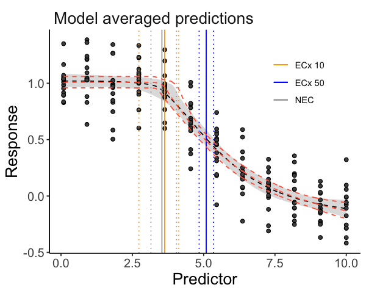

bayesnec
The background of bayesnec is covered in the Single model usage vignette. Here we explain multi model usage using bayesnec. In bayesnec it is possible to fit a custom model set, specific model set, or all of the available models. When multiple models are specified the bnec function returns a model weighted estimate of predicted posterior values, based on the “pseudobma” using Bayesian bootstrap through loo_model_weights (Vehtari et al. 2020; Vehtari, Gelman, and Gabry 2017). These are reasonably analogous to the way model weights are generated using AIC or AICc (Burnham and Anderson 2002).
It is also possible to obtain all individual model fits from the fitted bayesnecfit model object if required using the pull_out function, and also to update an existing model fit with additional models, or to drop models using the function amend.
Multi-model inference can be useful where there are a range of plausible models that could be used (Burnham and Anderson 2002) and has been recently adopted in ecotoxicology for Species Sensitivity Distribution (SSD) model inference (Thorley and Schwarz 2018). The approach may have considerable value in concentration-response modeling because there is often no a priori knowledge of the functional form that the response relationship should take. In this case model averaging can be a useful way of allowing the data to drive the model selection processing, with weights proportional to how well the individual models fits the data. Well-fitting models will have high weights, dominating the model averaged outcome. Conversely, poorly fitting models will have very low model weights and will therefore have little influence on the outcome. Where multiple models fit the data equally well, these can equally influence the outcome, and the resultant posterior predictions reflect that model uncertainty. It is possible to specify the “stacking” method (Yao et al. 2018) for model weights if desired (through the argument loo_controls) which aims to minimise prediction error. We do not currently recommend using stacking weights given the typical sample sizes associated with most concentration—response experiments, and because the main motivation for model averaging within the bayesnec package is to properly capture model uncertainty rather than reduce prediction error.
Installation
To install the latest release version from CRAN use
install.packages("bayesnec")The current development version can be downloaded from GitHub via
if (!requireNamespace("remotes")) {
install.packages("remotes")
}
remotes::install_github("open-aims/bayesnec")Because bayesnec is based on brms and Stan, a C++ compiler is required. The program Rtools comes with a C++ compiler for Windows. On Mac, you should install Xcode. See the prerequisites section on this link for further instructions on how to get the compilers running.
Examples
Fitting multiple models and model averaging using the bnec function
Fitting a bnec model
So far we have explored how to fit individual models via the function bnec. The bayesnec package also has the capacity to fit a custom selection of models, pre-specified sets of models, or even all the available models in the package. Note that as these are Bayesian methods requiring multiple MCMC chains, using bnec can be very slow when fitting models = "all". See details under ?bnec for more information on the models, and model sets that can be specified, as well as the Model details vignette which contains considerable information on the available models in bnec and their appropriate usage. In general it is safe to call models = "all", because by default bnec will discard invalid models and the model averaging approach should result in an overall fit that reflects the models that best fit the data. However, because the MCMC can be slow for models = "all" we do recommend testing you fit using a single (likely) model in the first instance, to make sure there is no issues with dispersion, the appropriate family is selected and model fitting appears robust (see the model the single model usage vignette for more details).
To run this vignette, we willneed the ggplot2 package:
library(bayesnec)
set.seed(30)
x <- seq(0, 10, length = 12)
y <- bayesnec:::pred_ecx4param(x = x, b_bot = 0, b_top = 1, b_beta = 0.5,
b_ec50 = 5)
df_ <- data.frame(x = rep(x, 15), y = rnorm(15 * 12, y, 0.2))
exp_5 <- bnec(data = df_, x_var = "x", y_var = "y", model = "decline", iter = 2e3)Here we run bnec using model = "decline" using a simulated data example for a beta response variable. We are using the decline set here because we are not going to consider hormesis (these allow an initial increase in the response), largely to save time in fitting this example. We save the output as an .RData file. Saving an .RData file of the bnec output can be a useful way of fitting large model sets (ie model = "all", or model = "decline") at a convenient time (this can be very slow, and may be run overnight for example) so you can reload them later to explore, plot, extract values, and amend the model set as required.
Exploring a bayesmanecfit model
We have created some plotting method functions for our bayesnec model types, so we can plot a bayesmanecfit model object simply with plot.
plot(exp_5) The default plot looks exactly the same as our regular
The default plot looks exactly the same as our regular bayesnecfit plot, but the output is based on a weighted average of all the model fits in the model = "decline" model set. The NEC estimate on this plot (and in the summary output below) is based on a mix of actual NEC estimates, as well as the NSEC estimates that are used as an approximation to NEC for all the ecx models in the set. Note that we do not currently recommend reporting these values as the NEC (see the Model details vignette for more information). The fitted bayesmanecfit object contains different elements to the bayesnecfit. In particular, mod_stats contains the table of model fit statistics for all the fitted models. This includes the model name, the WAIC (as returned from brms), wi (the model weight, currently defaulting to “pseudobma” using Bayesian bootstrap from loo), pD, and the overdispersion estimate.
exp_5$mod_stats
#> model waic wi dispersion_Estimate dispersion_Q2.5 dispersion_Q97.5
#> nec4param nec4param -40.75272 7.964242e-02 0.9866352 0.7298807 1.334673
#> neclin neclin 19.22863 2.638122e-09 1.0002044 0.7103761 1.310570
#> ecxlin ecxlin 26.21035 7.084188e-09 0.9999276 0.7456454 1.371861
#> ecx4param ecx4param -45.03642 1.630890e-01 0.9926411 0.7355155 1.333868
#> ecxwb1 ecxwb1 -45.81315 2.936186e-01 0.9870866 0.7387066 1.349078
#> ecxwb2 ecxwb2 -43.17848 9.675897e-02 0.9913437 0.7454251 1.306820
#> ecxll5 ecxll5 -44.53880 1.319952e-01 0.9929741 0.7531405 1.329122
#> ecxll4 ecxll4 -45.75654 2.348958e-01 0.9944131 0.7312557 1.327689We can obtain a neater summary of the model fit by using the summary method for a bayesmanecfit object. A list of fitted models, and model weights are provided. In addition, the model averaged NEC is reported, however a warning is provided indicating it contains NSEC values. A warning message also indicates that the ecxll5 model may have convergence issues according to the default brms Rhat criteria. For this example all the **ecx* type models have quite high weights, which we would expect given that type of model was used to generate the underlying example.
All these models fit quite well despite the relatively low iter set in our example, but the summary would also include a warning if there were fits with divergent transitions.
summary(exp_5)
#> Object of class bayesmanecfit containing the following non-linear models:
#> - nec4param
#> - neclin
#> - ecxlin
#> - ecx4param
#> - ecxwb1
#> - ecxwb2
#> - ecxll5
#> - ecxll4
#>
#> Distribution family: gaussian
#> Number of posterior draws per model: 800
#>
#> Model weights (Method: pseudobma_bb_weights):
#> waic wi dispersion_Estimate dispersion_Q2.5 dispersion_Q97.5
#> nec4param -40.75 0.08 0.99 0.73 1.33
#> neclin 19.23 0.00 1.00 0.71 1.31
#> ecxlin 26.21 0.00 1.00 0.75 1.37
#> ecx4param -45.04 0.16 0.99 0.74 1.33
#> ecxwb1 -45.81 0.29 0.99 0.74 1.35
#> ecxwb2 -43.18 0.10 0.99 0.75 1.31
#> ecxll5 -44.54 0.13 0.99 0.75 1.33
#> ecxll4 -45.76 0.23 0.99 0.73 1.33
#>
#>
#> Summary of weighted NEC posterior estimates:
#> NB: Model set contains the ECX models: ecxlin;ecx4param;ecxwb1;ecxwb2;ecxll5;ecxll4; weighted NEC estimates include NSEC surrogates for NEC
#> Estimate Q2.5 Q97.5
#> NEC 3.32 2.27 4.20The bayesmanecfit object also contains all of the original fits, which can be extracted using the pull_out function. For example, we can pull out the model ecx4param.

This would extract the nec4param model from the bayesmanecfit and create a new object that contains just this bayesnecfit fit. This would be identical to fitting the ecx4param as a single model using bnec. All of the models in the bayesmanecfit can be simultaneously plotted using the argument all_models = TRUE.
plot(exp_5, all_models = TRUE)
You can see that some of these models represent very bad fits, and accordingly have extremely low model weights, such as the ecxlin and neclin models in this example. There is no harm in leaving in poor models with low weight, precisely because they have such a low model weight and therefore will not influence posterior predictions. However, it is important to assess the adequacy of model fits of all models, because a poor fit may be more to do with a model that has not converged.
We can assess the chains for one of the higher weighted models to make sure this is good. It is probably good practice to do this for all models with a high weight.
plot(exp_5$mod_fits$ecxwb1$fit)
Assessing chains for all the models in bayesmanecfit doesn’t work as well using the default brms plotting method. Instead use check_chains and make sure to pass a filename argument, which means plots are automatically saved to pdf with a message.
check_chains(exp_5, filename = "example_5_all_chains")We can also make a plot to compare the posterior probability density to that of the prior using the check_priors function, for an individual model fit, but also saving all fits to a file in the working directory.
check_priors(exp_5$mod_fits$nec4param)
check_priors(exp_5, filename = "example_5_all_priors")Where a large number of models are failing to converge, obviously it would be better to adjust iter and warmup in the bnec call, as well as some of the other arguments to brms such as adapt_delta. See the brms documentation for more details. In the example above, only a single model had poor convergence according to rhat criteria. It is possible to exclude such models from the model set using amend and the bayesmanecfit rhat method, via:
Here we get an error because none of our models fail the default rhat criteria. A more conservative cut off of 1.01 can also be used by changing the default argument to the desired value. In this case quite a lot of models fail, although this is a very stringent criteria, and we have also used less than the default bayesnec value of iter.
rhat(exp_5, rhat_cutoff = 1.01)$failed
#> [1] "nec4param" "ecxll5"Extracting endpoint values
The models prefixed with ecx are all models that do not have the NEC as a parameter in the model. That is, they are smooth curves as a function of concentration and have no breakpoint. The NEC on the plots above for these models are an approximation based on NSEC and should not be used without careful consideration of the validity of this endpoint value (see the Model details vignette for more details). A formal model averaged estimate of NEC should be obtained with model = "nec". We can use the helper functions pull_out and amend to alter the model set as required. pull_out has a model argument and can be used to pull out a single model (as above) or to pull out a specific set of models.
We can use this to obtain first a set of NEC only models from the existing set.
exp_5_nec <- pull_out(exp_5, model = "nec")In this case, because we have already fitted “decline” models, we can ignore the message regarding the missing NEC models — these are all models that are not appropriate for a Beta family with a logit link function, or allow hormesis, which we did not consider in this example.
Now we have two model sets, an NEC set, and a mixed NEC and ECx set. Of course, before we use this model set for any inference, we would need to check the chain mixing and acf plot for each of the input models. For the “all” set, the model with the highest weight is nec4param.
Now we can use the ecx function to get EC10 and EC50 values. We can do this using our all model set, because it is valid to use NEC models for estimating ECx (see more information in the Model details vignette.
ECx10 <- ecx(exp_5, ecx_val = 10)
ECx50 <- ecx(exp_5, ecx_val = 50)
ECx10
#> ec_10 ec_10_lw ec_10_up
#> 3.592320 2.838475 4.306488
#> attr(,"precision")
#> [1] 1000
ECx50
#> ec_50 ec_50_lw ec_50_up
#> 4.842115 4.623897 5.070500
#> attr(,"precision")
#> [1] 1000The weighted NEC estimates can be extracted directly from the NEC model set object, as they are an explicit parameter in these models.
NECvals <- exp_5_nec$w_nec
NECvals
#> Estimate Q2.5 Q97.5
#> 4.147365 3.620584 4.358790Note that the new NEC estimates from the NEC only model fits are slightly higher than those reported in the summary output of all the fitted models. This can happen for smooth curves, which is what was used as the underlying data generation model in thie simulations here, and is explored in more detail in the Compare posteriors vigenette.
Putting it all together
Now we can make a combined plot of our output, showing the model averaged “NEC” model and the “all averaged model”, along with the relevant thresholds.
preds <- exp_5_nec$w_pred_vals$data
autoplot(exp_5, nec = FALSE, all = FALSE) +
geom_vline(mapping = aes(xintercept = ECx10, colour = "ECx 10"),
linetype = c(1, 3, 3), key_glyph = "path") +
geom_vline(mapping = aes(xintercept = ECx50, colour = "ECx 50"),
linetype = c(1, 3, 3), key_glyph = "path") +
geom_vline(mapping = aes(xintercept = NECvals, colour = "NEC"),
linetype = c(1, 3, 3), key_glyph = "path") +
scale_color_manual(values = c("ECx 10" = "orange", "ECx 50" = "blue",
"NEC" = "darkgrey"), name = "") +
geom_line(data = preds, mapping = aes(x = x, y = Estimate),
colour = "tomato", linetype = 2) +
geom_line(data = preds, mapping = aes(x = x, y = Q2.5),
colour = "tomato", linetype = 2) +
geom_line(data = preds, mapping = aes(x = x, y = Q97.5),
colour = "tomato", linetype = 2) +
theme(legend.position = c(0.8, 0.8),
axis.title = element_text(size = 16),
axis.text = element_text(size = 12),
strip.text.x = element_text(size = 16))
References
Burnham, K P, and D R Anderson. 2002. Model Selection and Multimodel Inference; A Practical Information-Theoretic Approach. 2nd ed. New York: Springer.
Thorley, Joe, and Carl Schwarz. 2018. ssdtools: Species Sensitivity Distributions. https://CRAN.R-project.org/package=ssdtools.
Vehtari, Aki, Jonah Gabry, Mans Magnusson, Yuling Yao, Paul-Christian Bürkner, Topi Paananen, and Andrew Gelman. 2020. Loo: Efficient Leave-One-Out Cross-Validation and Waic for Bayesian Models. https://mc-stan.org/loo/.
Vehtari, Aki, Andrew Gelman, and Jonah Gabry. 2017. “Practical Bayesian Model Evaluation Using Leave-One-Out Cross-Validation and Waic.” Statistics and Computing 27 (5): 1413–32. https://doi.org/10.1007/s11222-016-9696-4.
Yao, Yuling, Aki Vehtari, Daniel Simpson, and Andrew Gelman. 2018. “Using Stacking to Average Bayesian Predictive Distributions (with Discussion).” Bayesian Analysis 13 (3): 917–1007. https://doi.org/10.1214/17-ba1091.